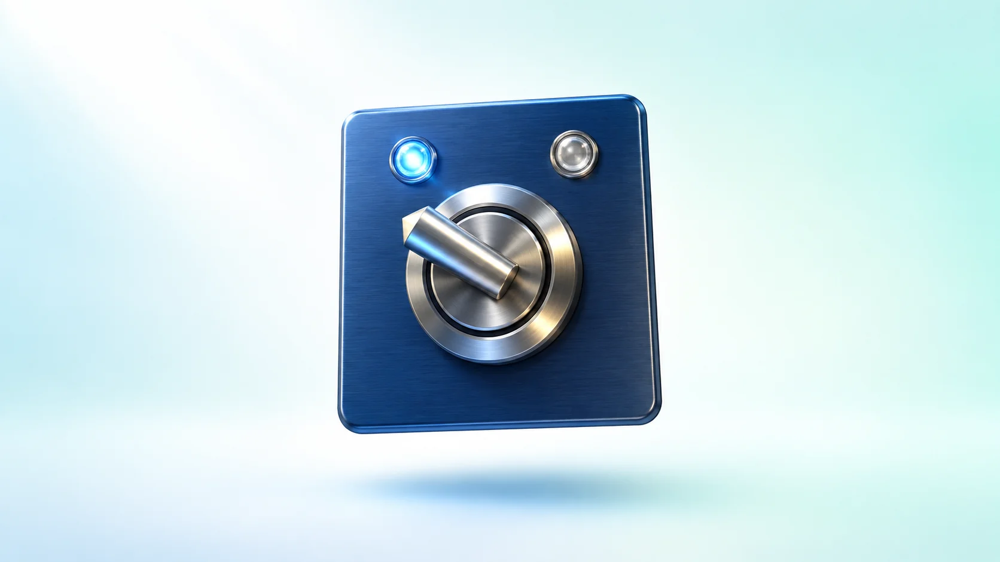
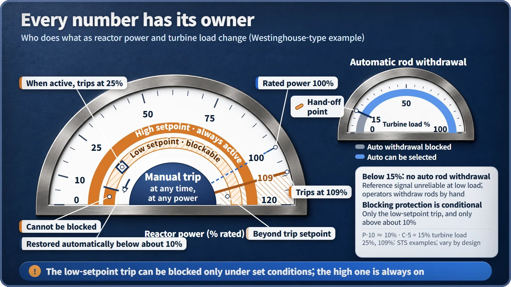

Plant Operation, Control & the Grid · 240
Three Brains in the Elevator Machine Room — Automatic Control, Manual Operation and Automatic Protection in a Nuclear Plant
Control holds the targets, protection holds the limits, and people hold the whole picture.

A nuclear plant is run by three brains: automatic control fine-tunes the plant toward its targets, a separate automatic protection system trips the reactor the moment a limit is reached, and operators judge, sequence and supervise. They are not substitutes for one another but a division of labor. [1]
Three brains in the elevator machine room
At the top of an apartment building's elevator shaft there's usually a machine room that nobody visits. Go up there and you'll find that the elevator isn't run by just one "brain."
The first is the controller. Press a button and it speeds the car up, slows it down and stops it level with the floor, all on its own. The second is a person. On inspection day, the technician switches the controller to "inspection mode" and moves the car very slowly by pressing the buttons directly. The third is the overspeed governor, mounted separately in a corner. If the car goes faster than a set speed, it triggers the safety gear that clamps onto the guide rails, regardless of what the controller is doing. Once it grips, it won't let go until the technician releases it by hand.
A nuclear power plant runs on exactly these three brains. Everyday fine-tuning is automatic control, guarding the danger line is automatic protection, and judgment and supervision are the operators' manual actions.
An endless loop that drives the error to zero
The backbone of automatic control is simple: measure, compare, act, and measure again. This is called feedback control. As a formula it takes a single line:
error = target − measured value
The controller moves the equipment in the direction that brings this error to zero, a lot when the error is large and only a little when it's small.
A classic example is the control rods. In a pressurized water reactor (a reactor whose water is kept under high pressure so it doesn't boil), the system measures the coolant's average temperature and compares it with a reference temperature calculated from the load the turbine is drawing. If the average temperature is above the reference, the neutron-absorbing rods go in a little; if it's below, they come out a little. A deliberate "dead band" ignores very small errors, because rods jumping in and out every time the temperature twitched would do more harm than good. [2]
This work is nonstop, repetitive and has to be fast: tailor-made for a machine.
Stopping is not control's job
Surely the control system shuts the reactor down too? No. Shutdown belongs to a completely separate protection system.
US nuclear regulations spell this out: even if a single part of the control system fails, the protection system's reliability and independence must remain intact. It's the same logic as the elevator governor working independently of the controller. Even at the moment a controller is wandering off, trusting a bad value, the protection system has to be watching with its own sensors. [3]
The protection system has several sets of decision circuits (channels). South Korea's APR1400, for example, trips the reactor when two or more of four channels watching the same variable detect a trip condition. This voting avoids needless shutdowns when one sensor fails, while making sure the reactor does stop when it needs to. When the trip signal comes, the power holding the control rods is cut and the rods fall by gravity; Westinghouse-type Technical Specifications require the drop to take 2.7 seconds or less. [4] [5]
And the rule that matters most: a protective action, once started, goes all the way to completion. Operators can trip the reactor manually at any time, but they cannot reverse an automatic trip that has already begun. Anyone can hit the brake, but once it engages, it can't be released halfway. [6]
![Reactor vessel cutaway with three paths: on the left, the automatic control loop of measure, compare (error equals target minus measured, with the reference temperature from turbine load and the measured average coolant temperature) and adjust the rods; on the right, a one-way protection path from protection sensors through channels A to D with two of four tripping, trip breakers opening and rods dropping by gravity within 2.7 seconds; along the bottom, the operator selecting auto or manual rod control and able to trip manually at any time](../../assets/images/theory/240-automatic-vs-manual-control/fig1-three-paths.webp)
Where human hands beat the machine
So do operators just watch? Not at all. There are stretches where the machine is the clumsy one.
The best example is the low-power startup range. In Westinghouse-type plants, automatic rod withdrawal is blocked outright while turbine load is below 15%, because the turbine pressure signal used to calculate the reference temperature doesn't properly represent power there. A person weighing several instruments does better than an automatic system faithfully following a wrong yardstick. So during startup, operators move the rods by hand and hand over to automatic once load passes 15%. [2]
The protection system also has a few precisely defined places where people can step in. During startup, a low threshold that trips the reactor at just 25% power is active, and only after power rises above about 10% can operators block it. If power drops back below 10%, the threshold comes back on by itself. At normal power, the 109% threshold is always on. [5]
People also step in when a sensor looks wrong. If one instrument sends a bad value, automatic control will faithfully chase it, so the operator switches to manual and takes over.

Give people time
Then why not leave urgent protection to people? The answer is time.
International Atomic Energy Agency (IAEA) design standards require that safety systems act automatically when fast, reliable action is needed. A US standard (ANS-58.8) follows the same logic: if operators wouldn't have enough time to finish an action before a limit is reached, that action must be automated. That's why accident analyses usually don't count on operator action during the first few tens of minutes after an accident begins. [7] [8]
Human judgment is excellent, but misunderstandings happen when alarms go off all at once. During the 1979 accident at Three Mile Island in the United States, operators saw a high pressurizer level, worried the system would fill completely with water, and throttled back the emergency cooling pumps that had started automatically. In reality, the core was short of cooling water. After that accident, instrument design, operator training and procedures changed significantly. [9]
Who handles what
| Automatic control | Automatic protection | Operators | |
|---|---|---|---|
| Job | Hold targets, second by second | Stop at the limit, irreversibly | Sequence, diagnose, supervise |
| Example | Rods hold average temperature | Trip above 109% power | Manual rods below 15% load; manual trip |
| Can people turn it off? | Yes, switch to manual | No, once started it completes (bypass only under set conditions) | — |
Just as we don't think about the three brains when we ride an elevator, a nuclear plant gets quieter the better this division of labor works. Automation doesn't replace people; it takes work off their hands so they can focus on the judgments that matter most.